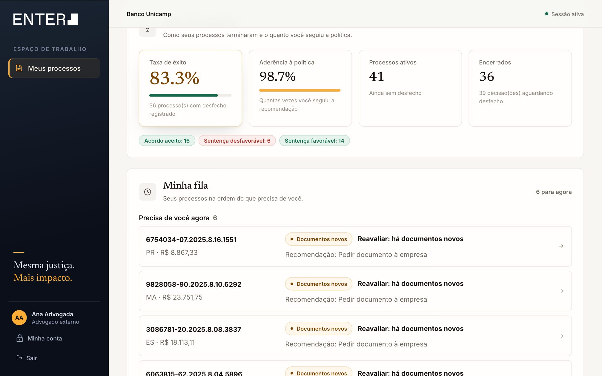
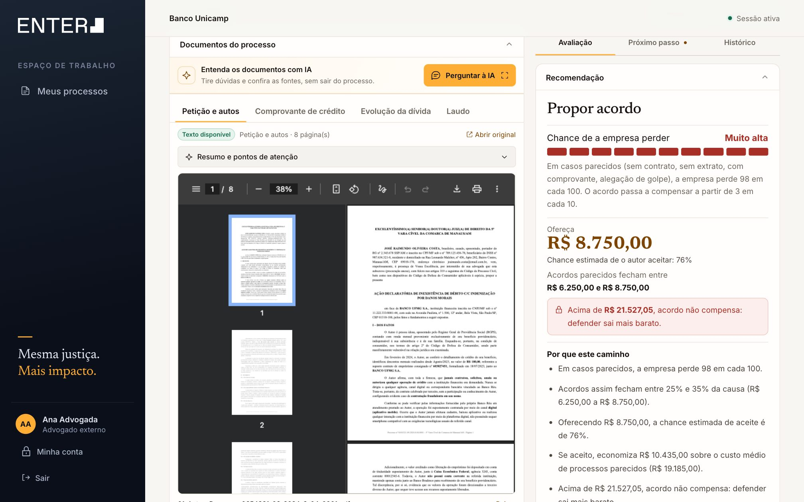
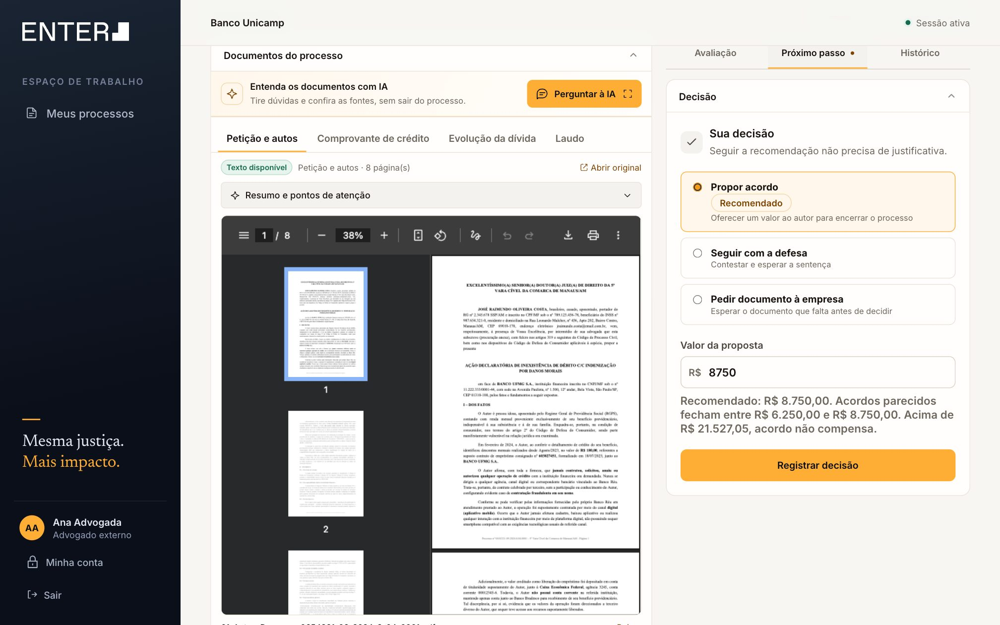
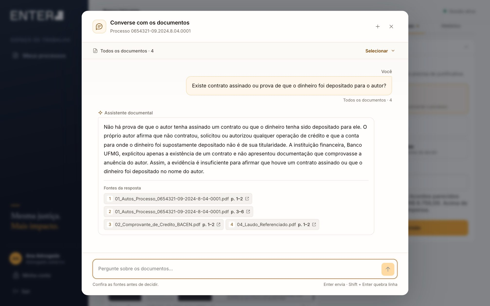
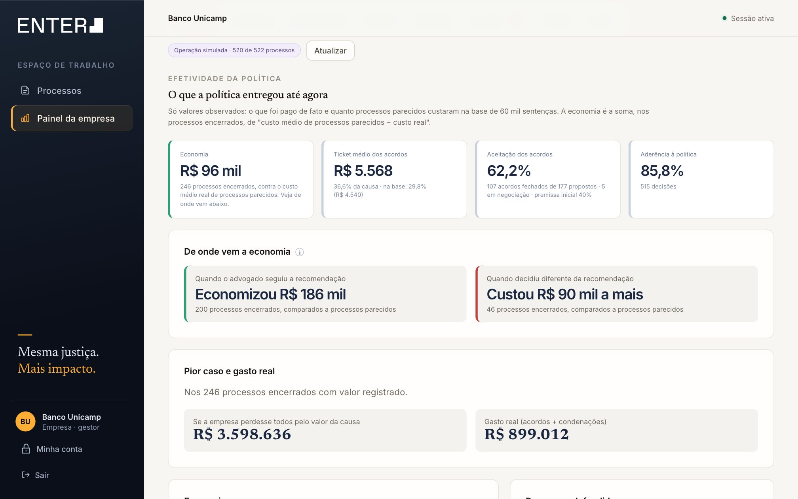
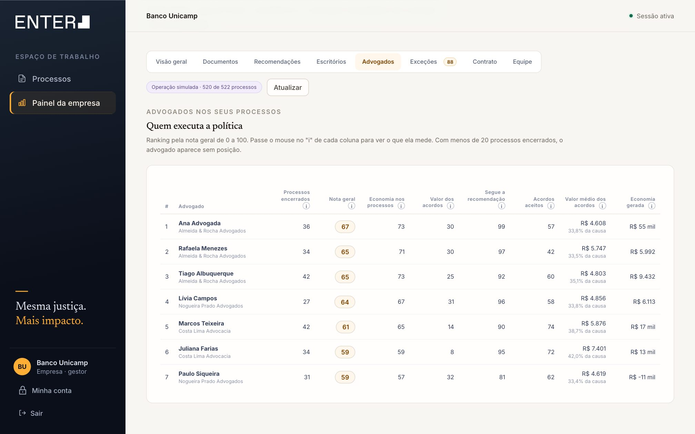
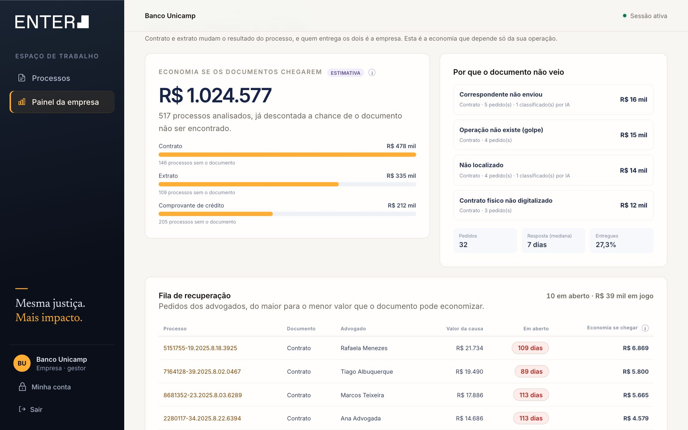

<title>Política de Acordos EnterOS</title>
<meta name="description" content="Apresentação final do módulo de Política de Acordos do EnterOS para o Banco Unicamp.">
<link rel="preconnect" href="https://fonts.googleapis.com">
<link rel="preconnect" href="https://fonts.gstatic.com" crossorigin>
<link rel="stylesheet" href="https://fonts.googleapis.com/css2?family=Inter:wght@400;500;600;700&family=Newsreader:ital,opsz,wght@0,6..72,400;0,6..72,500;0,6..72,600;1,6..72,400;1,6..72,500&display=swap">
<style>
/*
 * Mesmo sistema visual do produto: Newsreader para o que se lê (título, número, veredito),
 * Inter para o que se opera (rótulo, legenda). Âmbar é a marca; verde e vermelho são desfecho.
 * Cada slide é uma folha dos autos: cabeçalho com o módulo, a seção e a numeração "fls.".
 */
@page { size: 1600px 900px; margin: 0; }
:root {
  --tinta: #0b0f1a;
  --tinta-2: #161d2e;
  --ambar: #ffae35;
  --ambar-texto: #8a4b00;
  --ambar-suave: #fff3de;
  --ambar-borda: #f2d7ab;
  --papel: #f7f6f3;
  --folha: #fffefc;
  --afundado: #efece6;
  --filete: #e6e1d7;
  --filete-forte: #cfc8ba;
  --grafite: #16130f;
  --suave: #4a453d;
  --mudo: #6d675d;
  --verde: #146b4d;
  --verde-suave: #e4f2eb;
  --vermelho: #a82f26;
  --vermelho-suave: #fbeceb;
  --info: #245a9e;
  --fundo: #05070c;
  --serif: "Newsreader", Georgia, "Times New Roman", serif;
  --sans: "Inter", ui-sans-serif, system-ui, -apple-system, "Segoe UI", sans-serif;
}
* { box-sizing: border-box; }
html, body { margin: 0; height: 100%; background: var(--fundo); color: var(--grafite); }
body { overflow: hidden; font-family: var(--sans); -webkit-font-smoothing: antialiased; }
.deck { position: fixed; inset: 0; }

/* ── Folha ─────────────────────────────────────────────── */
.slide {
  position: absolute; left: 50%; top: 50%; width: 1600px; height: 900px;
  transform: translate(-50%, -50%) scale(var(--k, 1));
  display: none; flex-direction: column; padding: 0 96px; overflow: hidden;
  background: var(--papel); color: var(--grafite); font-size: 24px; line-height: 1.45;
  font-variant-numeric: lining-nums;
}
.slide.ativo { display: flex; }
.cab {
  flex: none; height: 84px; display: flex; align-items: flex-end; justify-content: space-between; gap: 24px;
  padding-bottom: 16px; border-bottom: 1px solid var(--filete-forte);
  font-size: 14px; font-weight: 500; letter-spacing: .14em; text-transform: uppercase; color: var(--mudo);
}
.cab b { color: var(--grafite); font-weight: 600; }
.cab .fls { font-family: var(--serif); font-style: italic; font-size: 21px; letter-spacing: 0; text-transform: none; color: var(--grafite); }
.corpo { flex: 1; min-height: 0; display: flex; flex-direction: column; gap: 34px; padding: 44px 0 56px; }
.kicker { margin: 0 0 14px; font-size: 15px; font-weight: 600; letter-spacing: .16em; text-transform: uppercase; color: var(--ambar-texto); }
h1, h2 { margin: 0; font-family: var(--serif); font-weight: 500; letter-spacing: -.018em; text-wrap: balance; }
h2 { font-size: 58px; line-height: 1.06; max-width: 1320px; }
h2 em, h1 em { font-style: italic; color: var(--ambar-texto); }
.lead { margin: 16px 0 0; max-width: 1080px; font-size: 26px; color: var(--suave); text-wrap: pretty; }
.nota { font-size: 17px; color: var(--mudo); line-height: 1.5; }
.serif { font-family: var(--serif); }
.num { font-family: var(--serif); font-weight: 500; letter-spacing: -.02em; font-variant-numeric: tabular-nums lining-nums; }
.grade { display: grid; gap: 32px; min-height: 0; }
.rot { font-size: 14px; font-weight: 600; letter-spacing: .14em; text-transform: uppercase; color: var(--mudo); }

/* Folha escura: capa e fecho */
.slide.tinta { background: var(--tinta); color: #e9e7e1; }
.slide.tinta .cab { border-color: #ffffff24; color: #9aa1b0; }
.slide.tinta .cab b, .slide.tinta .cab .fls { color: #fff; }
.slide.tinta h1, .slide.tinta h2 { color: #fff; }
.slide.tinta h1 em, .slide.tinta h2 em { color: var(--ambar); }
.slide.tinta .kicker { color: var(--ambar); }
.slide.tinta .lead { color: #b9bdc7; }

/* ── Capa ──────────────────────────────────────────────── */
.logo { display: inline-flex; align-items: flex-end; gap: 4px; font-family: var(--sans); font-weight: 600; font-size: 30px; letter-spacing: .02em; color: #fff; line-height: 1; }
.logo i { width: 14px; height: 14px; background: #fff; display: inline-block; margin-bottom: 2px; }
.capa .corpo { justify-content: center; gap: 0; padding-bottom: 40px; }
.capa h1 { font-size: 88px; line-height: 1.02; max-width: 1250px; }
.capa h1 em { display: block; font-size: 60px; line-height: 1.1; margin-top: 18px; max-width: 1180px; }
.capa .lead { margin-top: 30px; font-size: 25px; max-width: 900px; }
.missao { list-style: none; margin: 0; padding: 26px 0 40px; display: grid; grid-template-columns: repeat(3, 1fr); gap: 32px; border-top: 1px solid #ffffff24; font-size: 22px; color: #b9bdc7; }
.missao b { display: block; font-family: var(--serif); font-weight: 500; font-size: 34px; color: #fff; }
.capa-autos { position: absolute; right: 60px; top: 620px; font-family: var(--serif); font-style: italic; font-size: 104px; line-height: 1; color: #ffffff09; white-space: nowrap; pointer-events: none; }

/* ── Números do problema ───────────────────────────────── */
.tres-numeros { display: grid; grid-template-columns: repeat(3, 1fr); gap: 0; border-top: 1px solid var(--filete-forte); }
.tres-numeros > div { padding: 26px 32px 0 0; }
.tres-numeros > div + div { padding-left: 32px; border-left: 1px solid var(--filete); }
.tres-numeros .num { display: block; font-size: 84px; line-height: 1; white-space: nowrap; }
.tres-numeros p { margin: 14px 0 0; font-size: 21px; color: var(--suave); max-width: 380px; }
.passos { list-style: none; margin: 0; padding: 0; display: grid; grid-template-columns: repeat(5, 1fr); gap: 20px; counter-reset: p; }
.passos li { counter-increment: p; font-size: 19px; color: var(--suave); line-height: 1.4; padding-top: 14px; border-top: 2px solid var(--grafite); }
.passos li::before { content: counter(p); display: block; font-family: var(--serif); font-size: 30px; color: var(--grafite); margin-bottom: 6px; }
.desafio { margin: 0; font-family: var(--serif); font-size: 34px; line-height: 1.25; max-width: 1200px; }
.desafio b { font-weight: 500; font-style: italic; color: var(--ambar-texto); }

/* ── Quadro requisitos ─────────────────────────────────── */
.quadro { display: grid; grid-template-columns: 330px 1fr 290px; border-top: 2px solid var(--grafite); }
.quadro > * { padding: 17px 24px 17px 0; border-bottom: 1px solid var(--filete); font-size: 21px; line-height: 1.4; }
.quadro .th { font-size: 13px; font-weight: 600; letter-spacing: .14em; text-transform: uppercase; color: var(--mudo); padding-top: 12px; padding-bottom: 12px; }
.quadro .req { font-family: var(--serif); font-size: 27px; line-height: 1.2; display: flex; gap: 14px; align-items: baseline; }
.quadro .req small { font-family: var(--sans); font-size: 15px; font-weight: 600; color: var(--ambar-texto); }
.quadro .onde { color: var(--mudo); font-size: 18px; }

/* ── Mapa de risco (16 perfis) ─────────────────────────── */
.risco { display: grid; grid-template-columns: 1fr 820px; gap: 64px; align-items: start; }
.porta { border-left: 3px solid var(--vermelho); padding-left: 28px; }
.porta .num { font-size: 132px; line-height: .9; color: var(--vermelho); display: block; }
.porta p { margin: 12px 0 0; font-size: 22px; color: var(--suave); }
.porta p b { color: var(--grafite); font-weight: 600; }
.mapa { width: 100%; border-collapse: collapse; font-size: 17px; }
.mapa th { font-size: 13px; font-weight: 600; letter-spacing: .1em; text-transform: uppercase; color: var(--mudo); text-align: center; padding: 0 4px 10px; vertical-align: bottom; }
.mapa th.alt { text-align: left; padding-left: 12px; }
.mapa td { height: 51px; text-align: center; border-bottom: 1px solid var(--filete); color: var(--suave); }
.mapa td.doc { width: 86px; font-size: 20px; }
.mapa td.doc.nao { color: var(--filete-forte); }
.mapa td.p { width: 190px; padding: 3px; border-bottom: 0; }
.mapa td.p div {
  height: 45px; border-radius: 6px; display: flex; align-items: baseline; justify-content: space-between; padding: 10px 14px 0;
  background: color-mix(in oklab, var(--vermelho) calc(var(--p) * 100%), var(--folha));
  color: var(--grafite); font-size: 15px;
}
.mapa td.p div b { font-family: var(--serif); font-weight: 500; font-size: 24px; }
.mapa td.p.escuro div { color: #fff; }
.mapa td.p div span { font-size: 13px; opacity: .72; }

/* ── Preço ─────────────────────────────────────────────── */
.contas { display: grid; grid-template-columns: repeat(4, 1fr); gap: 0; border-top: 2px solid var(--grafite); }
.contas > div { padding: 20px 28px 0 0; }
.contas > div + div { padding-left: 28px; border-left: 1px solid var(--filete); }
.contas h3 { margin: 0 0 10px; font-family: var(--serif); font-weight: 500; font-size: 32px; line-height: 1.1; }
.contas p { margin: 0; font-size: 20px; color: var(--suave); }
.contas .formula { margin-top: 14px; font-size: 16px; color: var(--mudo); line-height: 1.5; }
.saidas { display: grid; grid-template-columns: repeat(3, 1fr); gap: 20px; }
.saida { padding: 20px 24px; border-radius: 12px; background: var(--folha); border: 1px solid var(--filete); }
.saida b { display: block; font-family: var(--serif); font-weight: 500; font-size: 28px; margin-bottom: 4px; }
.saida p { margin: 0; font-size: 18px; color: var(--suave); }
.saida.acordo b { color: var(--ambar-texto); }
.saida.defesa b { color: var(--info); }

/* ── Régua do caso real ────────────────────────────────── */
.casos { display: grid; grid-template-columns: 1fr 420px; gap: 56px; }
.regua-bloco h3, .contraste h3 { margin: 0; font-family: var(--serif); font-weight: 500; font-size: 30px; white-space: nowrap; }
.contraste h3 { font-size: 26px; }
.regua-bloco .meta, .contraste .meta { margin: 6px 0 0; font-size: 18px; color: var(--mudo); }
.veredito { display: flex; align-items: baseline; gap: 18px; margin: 18px 0 0; }
.veredito .num { font-size: 64px; line-height: 1; }
.veredito span { font-size: 20px; color: var(--suave); }
.regua { position: relative; height: 250px; margin-top: 18px; }
.regua svg { position: absolute; inset: 0; width: 100%; height: 100%; overflow: visible; }
.regua .et { position: absolute; font-size: 16px; line-height: 1.3; color: var(--suave); width: 250px; }
.regua .et b { display: block; font-family: var(--serif); font-weight: 500; font-size: 24px; color: var(--grafite); }
.regua .et.dir { text-align: right; }
.contraste { border-left: 1px solid var(--filete-forte); padding-left: 40px; }
.contraste .veredito .num { color: var(--info); }
.contraste ul { margin: 18px 0 0; padding: 0; list-style: none; display: grid; gap: 12px; font-size: 19px; color: var(--suave); }
.contraste li { padding-top: 12px; border-top: 1px solid var(--filete); }
.frase { margin: 0; font-family: var(--serif); font-size: 30px; line-height: 1.25; font-style: italic; color: var(--grafite); }

/* ── Premissas ─────────────────────────────────────────── */
.premissas { display: grid; grid-template-columns: 1fr 1fr; gap: 0 56px; }
.premissa { display: grid; grid-template-columns: 1fr auto; gap: 6px 20px; padding: 17px 0; border-bottom: 1px solid var(--filete); align-items: baseline; }
.premissa:nth-child(-n+2) { border-top: 2px solid var(--grafite); }
.premissa b { font-family: var(--serif); font-weight: 500; font-size: 27px; line-height: 1.15; }
.premissa p { grid-column: 1 / -1; margin: 0; font-size: 18px; color: var(--mudo); }
.selo { font-size: 13px; font-weight: 600; letter-spacing: .08em; text-transform: uppercase; padding: 4px 10px; border-radius: 999px; white-space: nowrap; }
.selo.base { background: var(--verde-suave); color: var(--verde); }
.selo.prem { background: var(--ambar-suave); color: var(--ambar-texto); }

/* ── Potencial ─────────────────────────────────────────── */
.potencial { display: grid; grid-template-columns: 1fr 470px; gap: 72px; align-items: start; }
.barras { display: grid; gap: 30px; margin-top: 8px; }
.barra .rotulo { display: flex; justify-content: space-between; align-items: baseline; font-size: 20px; color: var(--suave); margin-bottom: 10px; }
.barra .rotulo .num { font-size: 40px; color: var(--grafite); }
.barra .trilho { height: 56px; background: var(--afundado); border-radius: 6px; overflow: hidden; }
.barra .cheio { height: 100%; background: var(--grafite); border-radius: 6px; }
.barra.politica .cheio { background: var(--ambar); }
.barra .sobra { position: relative; }
.eco { border-left: 3px solid var(--ambar); padding-left: 32px; }
.eco .num { display: block; font-size: 150px; line-height: .9; }
.eco p { margin: 14px 0 0; font-size: 22px; color: var(--suave); }
.eco dl { margin: 28px 0 0; display: grid; gap: 14px; }
.eco dt { font-size: 14px; font-weight: 600; letter-spacing: .12em; text-transform: uppercase; color: var(--mudo); }
.eco dd { margin: 2px 0 0; font-family: var(--serif); font-size: 28px; line-height: 1.2; }

/* ── Validação ─────────────────────────────────────────── */
.provas { display: grid; grid-template-columns: repeat(3, 1fr); gap: 0; border-top: 2px solid var(--grafite); }
.provas > div { padding: 26px 36px 0 0; }
.provas > div + div { padding-left: 36px; border-left: 1px solid var(--filete); }
.provas .num { display: block; font-size: 76px; line-height: 1; white-space: nowrap; }
.provas .num small { font-size: 36px; }
.provas p { margin: 14px 0 0; font-size: 21px; color: var(--suave); }
.provas .nota { margin-top: 12px; }
.escolha { display: grid; grid-template-columns: 1fr 1fr; gap: 24px; }
.modelo { padding: 22px 26px; border-radius: 12px; border: 1px solid var(--filete); background: var(--folha); }
.modelo.nossa { border-color: var(--ambar-borda); background: var(--ambar-suave); }
.modelo .rot { display: block; margin-bottom: 8px; }
.modelo b { font-family: var(--serif); font-weight: 500; font-size: 30px; }
.modelo p { margin: 6px 0 0; font-size: 18px; color: var(--suave); }

/* ── Telas ─────────────────────────────────────────────── */
.telas { display: grid; grid-template-columns: 1fr 1fr; gap: 40px; min-height: 0; }
.tela-passo { display: flex; flex-direction: column; gap: 14px; min-width: 0; }
.tela-passo header { display: flex; gap: 16px; align-items: baseline; }
.tela-passo header .n { font-family: var(--serif); font-size: 40px; line-height: 1; color: var(--ambar-texto); }
.tela-passo header b { display: block; font-family: var(--serif); font-weight: 500; font-size: 28px; line-height: 1.15; }
.tela-passo header p { margin: 4px 0 0; font-size: 18px; color: var(--mudo); }
.tela { border-radius: 10px; overflow: hidden; border: 1px solid var(--filete-forte); background: #fff; box-shadow: 0 1px 2px #1a140b14, 0 28px 50px -30px #1a140b59; }
.tela img { display: block; width: 100%; height: auto; }

/* ── Fluxo ─────────────────────────────────────────────── */
.fluxo { position: relative; width: 1408px; height: 410px; }
.fluxo svg { position: absolute; inset: 0; width: 1408px; height: 410px; overflow: visible; }
.no { position: absolute; width: 250px; height: 72px; border-radius: 10px; background: var(--folha); border: 1px solid var(--filete-forte); padding: 11px 16px; display: flex; flex-direction: column; justify-content: center; }
.no b { font-weight: 600; font-size: 19px; line-height: 1.2; }
.no span { font-size: 14px; color: var(--mudo); line-height: 1.3; }
.no.inicio { background: var(--ambar-suave); border-color: var(--ambar-borda); }
.no.fim { background: var(--tinta); border-color: var(--tinta); }
.no.fim b { color: #fff; } .no.fim span { color: #b9bdc7; }
.regras { display: grid; grid-template-columns: repeat(4, 1fr); gap: 24px; list-style: none; margin: 0; padding: 18px 0 0; border-top: 1px solid var(--filete-forte); }
.regras li { font-size: 18px; color: var(--suave); line-height: 1.4; }
.regras li b { display: block; color: var(--grafite); font-weight: 600; }

/* ── Painel ────────────────────────────────────────────── */
.painel { display: grid; grid-template-columns: 820px 1fr; gap: 52px; min-height: 0; align-items: start; }
.fatos { display: grid; gap: 0; border-top: 2px solid var(--grafite); }
.fato { padding: 16px 0; border-bottom: 1px solid var(--filete); }
.fato .rot { display: block; margin-bottom: 4px; }
.fato .num { font-size: 44px; line-height: 1.05; }
.fato p { margin: 4px 0 0; font-size: 17px; color: var(--mudo); line-height: 1.4; }
.fato .num.bom { color: var(--verde); } .fato .num.ruim { color: var(--vermelho); }
.lado { display: grid; grid-template-columns: 1fr 1fr; gap: 20px; }

/* Pesos da nota */
.pesos { display: flex; height: 58px; border-radius: 8px; overflow: hidden; margin: 10px 0 12px; }
.pesos div { display: flex; align-items: center; padding: 0 14px; font-size: 16px; font-weight: 600; color: var(--grafite); white-space: nowrap; }
.pesos .p1 { flex: 50; background: var(--ambar); }
.pesos .p2 { flex: 20; background: #ffd28a; }
.pesos .p3 { flex: 20; background: #ffe5bb; }
.pesos .p4 { flex: 10; background: var(--afundado); }
.legenda-pesos { display: flex; font-size: 15px; color: var(--mudo); }
.legenda-pesos span:nth-child(1) { flex: 50; } .legenda-pesos span:nth-child(2) { flex: 20; }
.legenda-pesos span:nth-child(3) { flex: 20; } .legenda-pesos span:nth-child(4) { flex: 10; }
.lista { margin: 0; padding: 0; list-style: none; display: grid; gap: 10px; }
.lista li { font-size: 19px; color: var(--suave); padding-left: 22px; position: relative; line-height: 1.4; }
.lista li::before { content: ""; position: absolute; left: 0; top: .6em; width: 8px; height: 8px; border-radius: 2px; background: var(--ambar); }
.lista li b { color: var(--grafite); font-weight: 600; }

/* ── IA ────────────────────────────────────────────────── */
.ia { display: grid; grid-template-columns: 1.25fr 1fr; gap: 0; border-top: 2px solid var(--grafite); }
.ia > div { padding: 26px 48px 0 0; }
.ia > div + div { padding: 26px 0 0 48px; border-left: 1px solid var(--filete-forte); }
.ia h3 { margin: 0 0 18px; font-family: var(--serif); font-weight: 500; font-size: 34px; }
.usos { display: grid; grid-template-columns: 1fr 1fr; gap: 18px 28px; }
.uso b { display: block; font-size: 20px; font-weight: 600; line-height: 1.3; }
.uso p { margin: 4px 0 0; font-size: 17px; color: var(--mudo); line-height: 1.4; }
.nao-decide p { margin: 0 0 18px; font-size: 22px; color: var(--suave); }
.nao-decide .frase { font-size: 32px; margin-bottom: 22px; }

/* ── Arquitetura ───────────────────────────────────────── */
.arq { display: grid; grid-template-columns: 260px 40px 380px 40px 1fr; align-items: stretch; }
.seta { display: flex; align-items: center; justify-content: center; color: var(--filete-forte); font-size: 30px; }
.camada { display: flex; flex-direction: column; gap: 12px; }
.camada > .rot { margin-bottom: 2px; }
.caixa { border-radius: 10px; border: 1px solid var(--filete-forte); background: var(--folha); padding: 14px 18px; }
.caixa b { display: block; font-size: 19px; font-weight: 600; }
.caixa span { display: block; font-size: 15px; color: var(--mudo); line-height: 1.4; margin-top: 2px; }
.caixa.forte { background: var(--tinta); border-color: var(--tinta); }
.caixa.forte b { color: #fff; } .caixa.forte span { color: #b9bdc7; }
.caixa.marca { background: var(--ambar-suave); border-color: var(--ambar-borda); }
.nucleo { display: grid; grid-template-columns: 1fr 1fr; gap: 12px; }
.rodape-fatos { display: grid; grid-template-columns: repeat(3, 1fr); gap: 32px; padding-top: 18px; border-top: 1px solid var(--filete-forte); font-size: 18px; color: var(--suave); }
.rodape-fatos b { display: block; font-family: var(--serif); font-weight: 500; font-size: 30px; color: var(--grafite); }

/* ── Limitações e próximos passos ──────────────────────── */
.limites { display: grid; grid-template-columns: 1fr 1fr; gap: 0 56px; }
.limite { padding: 18px 0; border-bottom: 1px solid var(--filete); display: grid; grid-template-columns: 44px 1fr; gap: 4px 0; }
.limite:nth-child(-n+2) { border-top: 2px solid var(--grafite); }
.limite .rot { grid-column: 2; }
.limite b { grid-column: 2; font-family: var(--serif); font-weight: 500; font-size: 26px; line-height: 1.2; }
.limite p { grid-column: 2; margin: 4px 0 0; font-size: 18px; color: var(--mudo); }
.limite::before { content: ""; grid-row: 1 / span 3; width: 14px; height: 14px; margin-top: 8px; border: 2px solid var(--vermelho); border-radius: 50%; }
.proximos { display: grid; grid-template-columns: repeat(4, 1fr); gap: 0; border-top: 2px solid var(--grafite); }
.proximo { padding: 24px 28px 0 0; }
.proximo + .proximo { padding-left: 28px; border-left: 1px solid var(--filete); }
.proximo .n { font-family: var(--serif); font-size: 44px; line-height: 1; color: var(--ambar-texto); }
.proximo h3 { margin: 12px 0 10px; font-family: var(--serif); font-weight: 500; font-size: 30px; line-height: 1.12; }
.proximo p { margin: 0 0 10px; font-size: 18px; color: var(--suave); line-height: 1.45; }
.proximo .ja { font-size: 15px; color: var(--verde); font-weight: 600; }

/* ── Fecho ─────────────────────────────────────────────── */
.fecho .corpo { justify-content: center; gap: 44px; }
.fecho h2 { font-size: 104px; line-height: 1; }
.fecho-grade { display: grid; grid-template-columns: repeat(3, 1fr); gap: 40px; border-top: 1px solid #ffffff24; padding-top: 28px; }
.fecho-grade b { display: block; font-family: var(--serif); font-weight: 500; font-size: 34px; color: #fff; margin-bottom: 8px; }
.fecho-grade p { margin: 0; font-size: 20px; color: #b9bdc7; }

/* ── Apêndice ──────────────────────────────────────────── */
.slide.apendice { background: #f1efea; }
.slide.apendice .cab .fls { color: var(--ambar-texto); }
.apendice h2 { font-size: 46px; }
.colunas { display: grid; grid-template-columns: repeat(3, 1fr); gap: 0; border-top: 2px solid var(--grafite); }
.colunas.duas { grid-template-columns: 1fr 1fr; }
.colunas > div { padding: 22px 36px 0 0; }
.colunas > div + div { padding-left: 36px; border-left: 1px solid var(--filete-forte); }
.colunas h3 { margin: 0 0 10px; font-family: var(--serif); font-weight: 500; font-size: 28px; line-height: 1.15; }
.colunas p { margin: 0 0 12px; font-size: 19px; color: var(--suave); line-height: 1.5; }
.colunas p b { color: var(--grafite); font-weight: 600; }
.tabela-min { width: 100%; border-collapse: collapse; font-size: 18px; }
.tabela-min th { text-align: left; font-size: 13px; font-weight: 600; letter-spacing: .12em; text-transform: uppercase; color: var(--mudo); padding: 0 12px 8px 0; }
.tabela-min td { padding: 9px 12px 9px 0; border-top: 1px solid var(--filete); color: var(--suave); vertical-align: top; }
.tabela-min td:first-child { color: var(--grafite); font-weight: 600; }
.tabela-min td.n { text-align: right; font-variant-numeric: tabular-nums; white-space: nowrap; }

/* ── Controle ──────────────────────────────────────────── */
.hud { position: fixed; right: 18px; bottom: 14px; display: flex; align-items: center; gap: 6px; font: 500 13px/1 var(--sans); color: #c9ccd4; opacity: .38; transition: opacity .2s; z-index: 2; }
.hud:hover, .hud:focus-within { opacity: 1; }
.hud button { font: inherit; color: inherit; background: #ffffff14; border: 1px solid #ffffff26; border-radius: 6px; padding: 6px 10px; cursor: pointer; }
.hud button:focus-visible { outline: 2px solid var(--ambar); outline-offset: 2px; }
.hud span { min-width: 64px; text-align: center; font-variant-numeric: tabular-nums; }

@media print {
  html, body { height: auto; overflow: visible; background: none; }
  .deck { position: static; }
  .slide { position: relative; left: auto; top: auto; transform: none; display: flex !important; break-after: page; page-break-after: always; }
  .hud { display: none; }
}
</style>

<main class="deck" aria-roledescription="apresentação">

<!-- 1 · Capa -->
<section class="slide tinta capa" aria-label="Capa">
  <div class="capa-autos" aria-hidden="true">0654321-09.2024.8.04.0001</div>
  <div class="cab"><span class="logo">ENTER<i></i></span><span>Hackathon Enter × Unicamp · 13 de setembro de 2026</span></div>
  <div class="corpo">
    <p class="kicker">EnterOS · Política de Acordos · Banco Unicamp</p>
    <h1>Defender ou fazer acordo? <em>A mesma resposta, pelo mesmo critério, em cada processo.</em></h1>
    <p class="lead">Para as ações em que o autor diz não reconhecer a contratação de um empréstimo: a política decide, o advogado executa e a empresa acompanha.</p>
  </div>
  <ol class="missao">
    <li><b>Definir</b>a política de acordos, com a base de 60 mil sentenças</li>
    <li><b>Garantir</b>que cada advogado a aplique do mesmo jeito</li>
    <li><b>Monitorar</b>se ela está dando o resultado esperado</li>
  </ol>
</section>

<!-- 2 · Problema -->
<section class="slide" aria-label="O problema">
  <div class="cab"><span><b>EnterOS</b> · Política de Acordos</span><span>O problema</span><span class="fls">fls. 02</span></div>
  <div class="corpo">
    <div>
      <p class="kicker">Contexto</p>
      <h2>Todo mês, milhares de advogados respondem à mesma pergunta — <em>cada um do seu jeito.</em></h2>
    </div>
    <div class="tres-numeros">
      <div><span class="num">15 mil</span><p>novos processos por mês no Banco Unicamp</p></div>
      <div><span class="num">5 mil</span><p>alegam não reconhecer a contratação de um empréstimo</p></div>
      <div><span class="num">R$ 193 mi</span><p>pagos em acordos e condenações nas 60 mil sentenças da base</p></div>
    </div>
    <ol class="passos" aria-label="Como o fluxo funciona hoje">
      <li>Advogado externo recebe o processo pela plataforma</li>
      <li>Lê os autos e os subsídios que a empresa enviou</li>
      <li>Decide: defesa ou acordo, com base na política</li>
      <li>Se for acordo, negocia com o autor</li>
      <li>Reporta à empresa a decisão, o valor e o resultado</li>
    </ol>
    <p class="desafio">O desafio é triplo: <b>definir</b> uma boa política, <b>garantir</b> que ela seja seguida e <b>monitorar</b> os resultados.</p>
  </div>
</section>

<!-- 3 · Requisitos → solução -->
<section class="slide" aria-label="Requisitos e solução">
  <div class="cab"><span><b>EnterOS</b> · Política de Acordos</span><span>Requisitos → solução</span><span class="fls">fls. 03</span></div>
  <div class="corpo">
    <div>
      <p class="kicker">O que foi pedido e o que entregamos</p>
      <h2>Os cinco requisitos mínimos, <em>cada um com um lugar no produto.</em></h2>
    </div>
    <div class="quadro" role="table">
      <div class="th" role="columnheader">Requisito</div><div class="th" role="columnheader">Como resolvemos</div><div class="th" role="columnheader">Onde aparece</div>
      <div class="req"><small>01</small>Regra de decisão</div><div>Primeiro a prova (sem contrato e sem extrato não há defesa padrão), depois 16 perfis de documentos e o estado: defender, propor acordo ou pedir o documento que falta.</div><div class="onde">Tela do advogado · Avaliação</div>
      <div class="req"><small>02</small>Sugestão de valor</div><div>A oferta com melhor retorno dentro da faixa em que acordos parecidos fecham, e o limite explícito: acima de R$ X, defender sai mais barato.</div><div class="onde">Avaliação e decisão</div>
      <div class="req"><small>03</small>Acesso à recomendação</div><div>Fila ordenada pelo que precisa do advogado, análise pronta ao abrir, documentos e conversa com IA no mesmo lugar.</div><div class="onde">Minha fila · processo</div>
      <div class="req"><small>04</small>Aderência</div><div>Quem segue a recomendação, exceções com motivo e nota de 0 a 100 por advogado e por escritório.</div><div class="onde">Painel da empresa</div>
      <div class="req"><small>05</small>Efetividade</div><div>Economia observada contra processos parecidos, ticket médio, aceitação dos acordos e o valor dos documentos que não chegam.</div><div class="onde">Painel da empresa</div>
    </div>
  </div>
</section>

<!-- 4 · A prova -->
<section class="slide" aria-label="Regra de decisão: a prova">
  <div class="cab"><span><b>EnterOS</b> · Política de Acordos</span><span>Regra de decisão · 1. A prova</span><span class="fls">fls. 04</span></div>
  <div class="corpo">
    <div>
      <p class="kicker">Antes do valor, a pergunta jurídica</p>
      <h2>A empresa consegue provar que o empréstimo existiu?</h2>
    </div>
    <div class="risco">
      <div style="display:grid; gap:36px">
        <div class="porta">
          <span class="rot">Sem contrato válido e sem extrato</span>
          <span class="num">2,7%</span>
          <p>é quanto a empresa vence em <b>6.493 processos</b> assim — <b>10,8% do volume e 34,7% de todo o custo</b>. Sem prova da contratação (art. 373, II, do CPC), a defesa sai do caminho padrão e só segue com justificativa.</p>
        </div>
        <div>
          <span class="rot">Depois, o perfil do processo</span>
          <p style="margin:10px 0 0; font-size:21px; color:var(--suave)">Quais documentos a empresa tem e se o autor alega golpe definem a chance de perder. O estado ajusta: <b style="color:var(--grafite); font-weight:600">AM, AP, BA, GO, RJ e RS</b> ficam no grupo de risco mais alto. Dossiê e laudo, na base, não mudam o resultado.</p>
        </div>
      </div>
      <table class="mapa" aria-label="Chance de a empresa perder por perfil de documentos">
        <thead><tr><th>Contrato</th><th>Extrato</th><th>Comprov. de crédito</th><th class="alt">Alegação comum</th><th class="alt">Alega golpe</th></tr></thead>
        <tbody>
          <tr><td class="doc">✓</td><td class="doc">✓</td><td class="doc">✓</td><td class="p" style="--p:.021"><div><b>2</b><span>em 100 · 9.351</span></div></td><td class="p" style="--p:.052"><div><b>5</b><span>em 100 · 16.647</span></div></td></tr>
          <tr><td class="doc">✓</td><td class="doc">✓</td><td class="doc nao">—</td><td class="p" style="--p:.064"><div><b>6</b><span>em 100 · 4.177</span></div></td><td class="p" style="--p:.166"><div><b>17</b><span>em 100 · 8.196</span></div></td></tr>
          <tr><td class="doc">✓</td><td class="doc nao">—</td><td class="doc">✓</td><td class="p" style="--p:.309"><div><b>31</b><span>em 100 · 650</span></div></td><td class="p escuro" style="--p:.524"><div><b>52</b><span>em 100 · 1.742</span></div></td></tr>
          <tr><td class="doc">✓</td><td class="doc nao">—</td><td class="doc nao">—</td><td class="p escuro" style="--p:.612"><div><b>61</b><span>em 100 · 472</span></div></td><td class="p escuro" style="--p:.774"><div><b>77</b><span>em 100 · 1.748</span></div></td></tr>
          <tr><td class="doc nao">—</td><td class="doc">✓</td><td class="doc">✓</td><td class="p" style="--p:.290"><div><b>29</b><span>em 100 · 1.454</span></div></td><td class="p escuro" style="--p:.543"><div><b>54</b><span>em 100 · 3.957</span></div></td></tr>
          <tr><td class="doc nao">—</td><td class="doc">✓</td><td class="doc nao">—</td><td class="p escuro" style="--p:.608"><div><b>61</b><span>em 100 · 1.149</span></div></td><td class="p escuro" style="--p:.815"><div><b>82</b><span>em 100 · 3.964</span></div></td></tr>
          <tr><td class="doc nao">—</td><td class="doc nao">—</td><td class="doc">✓</td><td class="p escuro" style="--p:.903"><div><b>90</b><span>em 100 · 455</span></div></td><td class="p escuro" style="--p:.965"><div><b>96</b><span>em 100 · 2.158</span></div></td></tr>
          <tr><td class="doc nao">—</td><td class="doc nao">—</td><td class="doc nao">—</td><td class="p escuro" style="--p:.971"><div><b>97</b><span>em 100 · 664</span></div></td><td class="p escuro" style="--p:.989"><div><b>99</b><span>em 100 · 3.216</span></div></td></tr>
        </tbody>
      </table>
    </div>
  </div>
</section>

<!-- 5 · O preço -->
<section class="slide" aria-label="Regra de decisão: o preço">
  <div class="cab"><span><b>EnterOS</b> · Política de Acordos</span><span>Regra de decisão · 2. O preço</span><span class="fls">fls. 05</span></div>
  <div class="corpo">
    <div>
      <p class="kicker">Quanto custa cada caminho</p>
      <h2>Acordo só quando custa menos que defender — <em>e nunca acima do que o mercado paga.</em></h2>
    </div>
    <div class="contas">
      <div><h3>Custo de defender</h3><p>Chance de perder × condenação média, corrigida pelo tempo, mais honorários.</p><p class="formula">Condenação média: 71% da causa · 1% ao mês por 24 meses</p></div>
      <div><h3>Valor máximo</h3><p>O custo de defender, menos o honorário do acordo. <b style="color:var(--grafite); font-weight:600">Acima dele, defender sai mais barato.</b></p><p class="formula">Aparece para o advogado como “acima de R$ X, acordo não compensa”</p></div>
      <div><h3>Faixa de mercado</h3><p>Onde acordos parecidos fecham: de 25% a 35% da causa.</p><p class="formula">280 acordos reais da base · mediana de 29% da causa</p></div>
      <div><h3>Oferta recomendada</h3><p>Dentro da faixa, o valor com melhor equilíbrio entre chance de aceite e economia até o máximo.</p><p class="formula">Chance de aceite pela curva dos 280 acordos · arredondado a R$ 10</p></div>
    </div>
    <div class="saidas">
      <div class="saida acordo"><b>Propor acordo</b><p>O valor máximo fica acima da proposta de abertura: existe espaço para negociar.</p></div>
      <div class="saida defesa"><b>Seguir com a defesa</b><p>Defender custa menos que a própria abertura do acordo.</p></div>
      <div class="saida"><b>Pedir documento</b><p>O documento que falta mudaria a decisão e há chance de achá-lo: 70% com dossiê ou laudo, 25% sem.</p></div>
    </div>
  </div>
</section>

<!-- 6 · Dois casos reais -->
<section class="slide" aria-label="Dois processos reais">
  <div class="cab"><span><b>EnterOS</b> · Política de Acordos</span><span>Regra de decisão · na prática</span><span class="fls">fls. 06</span></div>
  <div class="corpo" style="gap:26px">
    <div>
      <p class="kicker">Os dois processos de exemplo, pela mesma regra</p>
      <h2>Mesmo critério, respostas opostas — <em>e cada uma se explica.</em></h2>
    </div>
    <div class="casos">
      <div class="regua-bloco">
        <h3>0654321-09.2024.8.04.0001</h3>
        <p class="meta">Manaus/AM · alega golpe · causa de R$ 25.000 · sem contrato e sem extrato</p>
        <div class="veredito"><span class="num" style="color:var(--vermelho)">98 em 100</span><span>é a chance de a empresa perder → <b style="color:var(--ambar-texto)">propor acordo</b></span></div>
        <div class="regua" aria-label="Régua de valores do processo, de R$ 0 a R$ 25.000">
          <svg viewBox="0 0 900 250" preserveAspectRatio="none" aria-hidden="true">
            <rect x="0" y="118" width="900" height="14" rx="3" fill="#efece6"/>
            <rect x="225" y="112" width="90" height="26" rx="4" fill="#ffae35"/>
            <rect x="775" y="118" width="125" height="14" fill="#fbeceb"/>
            <line x1="315" y1="100" x2="315" y2="150" stroke="#16130f" stroke-width="2"/>
            <line x1="690.7" y1="96" x2="690.7" y2="118" stroke="#6d675d" stroke-width="2"/>
            <line x1="775" y1="132" x2="775" y2="162" stroke="#a82f26" stroke-width="3"/>
            <text x="0" y="245" font-family="Inter, sans-serif" font-size="15" fill="#6d675d">R$ 0</text>
            <text x="900" y="245" text-anchor="end" font-family="Inter, sans-serif" font-size="15" fill="#6d675d">R$ 25.000 · causa</text>
          </svg>
          <div class="et" style="left:25%; top:0; transform:translateX(-50%); width:240px; text-align:center"><b>R$ 6.250 – 8.750</b>faixa de mercado</div>
          <div class="et" style="left:35%; top:160px; transform:translateX(-30%); width:280px"><b>R$ 8.750</b>oferta · 76% de chance de aceite</div>
          <div class="et dir" style="right:calc(100% - 76.7% - 10px); top:0; width:300px"><b>R$ 19.185</b>custo médio de 645 parecidos</div>
          <div class="et dir" style="right:calc(100% - 86.1%); top:170px; width:340px"><b>R$ 21.527</b>acima disso, defender sai mais barato</div>
        </div>
        <p class="frase" style="font-size:25px; margin-top:6px">Se aceito, economiza R$ 10.435 frente ao que processos parecidos custaram.</p>
      </div>
      <div class="contraste">
        <h3>0801234-56.2024.8.10.0001</h3>
        <p class="meta">São Luís/MA · não reconhece a contratação · causa de R$ 20.000 · 7 documentos</p>
        <div class="veredito"><span class="num">2 em 100</span></div>
        <p class="meta" style="margin-top:4px; font-size:20px; color:var(--suave)">é a chance de perder → <b style="color:var(--info)">seguir com a defesa</b></p>
        <ul>
          <li>Tem a prova mínima da contratação: contrato e extrato.</li>
          <li>Defender custa <b style="color:var(--grafite)">R$ 272,85</b> em média, contra <b style="color:var(--grafite)">R$ 5.800</b> de abertura de acordo.</li>
          <li>MA está no grupo de menor risco.</li>
        </ul>
      </div>
    </div>
  </div>
</section>

<!-- 7 · Premissas -->
<section class="slide" aria-label="Premissas adotadas">
  <div class="cab"><span><b>EnterOS</b> · Política de Acordos</span><span>Premissas adotadas</span><span class="fls">fls. 07</span></div>
  <div class="corpo">
    <div>
      <p class="kicker">O que vem da base e o que assumimos</p>
      <h2>Toda conta tem premissas. <em>Aqui elas estão à vista.</em></h2>
    </div>
    <div class="premissas">
      <div class="premissa"><b>Quando perde, a empresa paga em média 71% da causa</b><span class="selo base">Da base</span><p>17.987 condenações nas 60 mil sentenças.</p></div>
      <div class="premissa"><b>Acordos fecham entre 25% e 35% da causa</b><span class="selo base">Da base</span><p>280 acordos: mediana de 29%, e é essa a proposta de abertura.</p></div>
      <div class="premissa"><b>O autor aceita 40% das ofertas, no começo</b><span class="selo prem">Premissa</span><p>A base não registra ofertas recusadas. Com 10 respostas registradas, a taxa real passa a ajustar a recomendação.</p></div>
      <div class="premissa"><b>O documento que falta é encontrado em 70% dos casos</b><span class="selo prem">Premissa</span><p>70% quando há dossiê ou laudo apontando que ele existe; 25% sem esse sinal.</p></div>
      <div class="premissa"><b>O processo custa 1% ao mês por 24 meses</b><span class="selo prem">Premissa</span><p>Juros e capital parado. A decisão não muda entre 12 e 36 meses.</p></div>
      <div class="premissa"><b>Honorários de sucumbência de 15% da condenação</b><span class="selo prem">Premissa</span><p>Praxe de 10% a 20% (art. 85 do CPC). Honorários do escritório vêm do contrato com a empresa.</p></div>
    </div>
    <p class="nota" style="margin:0">Para o jurídico, a política fala em frequências (“98 em cada 100”), nunca em siglas ou probabilidades.</p>
  </div>
</section>

<!-- 8 · Potencial financeiro -->
<section class="slide" aria-label="Potencial financeiro">
  <div class="cab"><span><b>EnterOS</b> · Política de Acordos</span><span>Potencial financeiro</span><span class="fls">fls. 08</span></div>
  <div class="corpo">
    <div>
      <p class="kicker">A política aplicada às 60 mil sentenças da base</p>
      <h2>Com a política, a empresa teria pago <em>R$ 29,5 milhões a menos.</em></h2>
    </div>
    <div class="potencial">
      <div>
        <div class="barras">
          <div class="barra">
            <div class="rotulo"><span>O que foi pago de fato</span><span class="num">R$ 193,0 mi</span></div>
            <div class="trilho"><div class="cheio" style="width:100%"></div></div>
          </div>
          <div class="barra politica">
            <div class="rotulo"><span>Com a política, com 40% de aceitação</span><span class="num">R$ 163,5 mi</span></div>
            <div class="trilho"><div class="cheio" style="width:84.7%"></div></div>
          </div>
        </div>
        <div class="lado" style="margin-top:40px">
          <div class="fato" style="border-top:1px solid var(--filete-forte)"><span class="rot">Se a aceitação variar</span><span class="num">R$ 22 a 44 mi</span><p>de economia, com aceitação entre 30% e 60%</p></div>
          <div class="fato" style="border-top:1px solid var(--filete-forte)"><span class="rot">Teto</span><span class="num">27,7%</span><p>se todo dossiê presente periciar a assinatura do contrato</p></div>
        </div>
      </div>
      <div class="eco">
        <span class="num">15,3%</span>
        <p>de economia, só com a informação de quais documentos o processo tem.</p>
        <dl>
          <div><dt>Por processo</dt><dd>≈ R$ 490</dd></div>
          <div><dt>Nos 5 mil processos por mês</dt><dd>≈ R$ 2,5 milhões por mês</dd></div>
        </dl>
        <p class="nota" style="margin-top:18px">Estimativa por mês: a base não informa o período que cobre.</p>
      </div>
    </div>
  </div>
</section>

<!-- 9 · Validação -->
<section class="slide" aria-label="Validação">
  <div class="cab"><span><b>EnterOS</b> · Política de Acordos</span><span>Validação</span><span class="fls">fls. 09</span></div>
  <div class="corpo">
    <div>
      <p class="kicker">Testada em processos que ela não viu</p>
      <h2>O risco que a política mostra <em>é o risco que acontece.</em></h2>
    </div>
    <div class="provas">
      <div><span class="num">92 <small>em 100</small></span><p>pares de processos — um perdido, um ganho — em que a política aponta corretamente qual tinha mais risco.</p><p class="nota">AUC de 0,92, fora da amostra, em 5 rodadas.</p></div>
      <div><span class="num">0,62 <small>ponto</small></span><p>é a maior distância entre o risco previsto e o que aconteceu, em qualquer faixa de risco.</p><p class="nota">Quando diz “30 em cada 100”, acontece entre 29,4 e 30,6.</p></div>
      <div><span class="num">R$ 192,9 mi</span><p>de condenações previstas pela política, contra R$ 193,0 mi pagos de fato na base.</p><p class="nota">A média de 71% da causa reproduz o total pago.</p></div>
    </div>
    <div class="escolha">
      <div class="modelo"><span class="rot">Aprendizado de máquina (LightGBM)</span><b>92,15 em 100</b><p>Caixa-preta: precisa de treino, dependências e é difícil de auditar.</p></div>
      <div class="modelo nossa"><span class="rot">Tabela de 16 perfis · escolhida</span><b>91,99 em 100</b><p>Empate prático, economizou R$ 68 mil a mais, e o jurídico lê e audita cada linha.</p></div>
    </div>
  </div>
</section>

<!-- 10 · Advogado: fila e avaliação -->
<section class="slide" aria-label="Experiência do advogado: fila e avaliação">
  <div class="cab"><span><b>EnterOS</b> · Política de Acordos</span><span>Experiência do advogado</span><span class="fls">fls. 10</span></div>
  <div class="corpo" style="gap:28px">
    <div>
      <p class="kicker">Acesso à recomendação</p>
      <h2>O advogado abre o processo <em>e a análise já está pronta.</em></h2>
    </div>
    <div class="telas">
      <div class="tela-passo">
        <header><span class="n">1</span><div><b>Minha fila</b><p>O que precisa dele primeiro, e o próprio desempenho no topo.</p></div></header>
        <div class="tela"></div>
      </div>
      <div class="tela-passo">
        <header><span class="n">2</span><div><b>Avaliação</b><p>Chance de perder, oferta, faixa de mercado e o limite, ao lado dos autos.</p></div></header>
        <div class="tela"></div>
      </div>
    </div>
  </div>
</section>

<!-- 11 · Advogado: decisão e IA -->
<section class="slide" aria-label="Experiência do advogado: decisão e documentos">
  <div class="cab"><span><b>EnterOS</b> · Política de Acordos</span><span>Experiência do advogado</span><span class="fls">fls. 11</span></div>
  <div class="corpo" style="gap:28px">
    <div>
      <p class="kicker">Garantir a implementação</p>
      <h2>Seguir a política é um clique. <em>Divergir deixa rastro.</em></h2>
    </div>
    <div class="telas">
      <div class="tela-passo">
        <header><span class="n">3</span><div><b>Decisão</b><p>Seguir não pede justificativa; divergir ou passar do máximo pede o motivo.</p></div></header>
        <div class="tela"></div>
      </div>
      <div class="tela-passo">
        <header><span class="n">4</span><div><b>Documentos com IA</b><p>PDF original na tela, resumo por documento e perguntas com fonte e página.</p></div></header>
        <div class="tela"></div>
      </div>
    </div>
  </div>
</section>

<!-- 12 · Fluxo -->
<section class="slide" aria-label="Fluxo do processo">
  <div class="cab"><span><b>EnterOS</b> · Política de Acordos</span><span>Regras de negócio · fluxo</span><span class="fls">fls. 12</span></div>
  <div class="corpo" style="gap:30px">
    <div>
      <p class="kicker">Cada fase só oferece o que faz sentido</p>
      <h2>Um fluxo que <em>não deixa registrar decisão incoerente.</em></h2>
    </div>
    <div class="fluxo">
      <svg viewBox="0 0 1408 410" aria-hidden="true">
        <defs><marker id="ponta" viewBox="0 0 10 10" refX="9" refY="5" markerWidth="8" markerHeight="8" orient="auto-start-reverse"><path d="M0 0 L10 5 L0 10 z" fill="#6d675d"/></marker></defs>
        <g fill="none" stroke="#6d675d" stroke-width="2">
          <path d="M250 186 H326" marker-end="url(#ponta)"/>
          <path d="M580 186 H650 V36 H716" marker-end="url(#ponta)"/>
          <path d="M580 186 H716" marker-end="url(#ponta)"/>
          <path d="M650 186 V336 H716" marker-end="url(#ponta)"/>
          <path d="M970 36 H1096" marker-end="url(#ponta)"/>
          <path d="M845 72 V146" marker-end="url(#ponta)"/>
          <path d="M970 186 H1096" marker-end="url(#ponta)"/>
          <path d="M970 336 H1096" marker-end="url(#ponta)"/>
          <path d="M1225 372 V398 H455 V226" marker-end="url(#ponta)" stroke-dasharray="6 6"/>
        </g>
        <g font-family="Inter, sans-serif" font-size="15" fill="#4a453d">
          <text x="1033" y="26" text-anchor="middle">aceito</text>
          <text x="857" y="116">recusou ou não respondeu</text>
          <text x="1033" y="176" text-anchor="middle">sentença</text>
          <text x="1033" y="326" text-anchor="middle">chegou</text>
          <text x="600" y="390">reavaliar</text>
        </g>
      </svg>
      <div class="no inicio" style="left:0; top:150px"><b>Aguardando avaliação</b><span>análise roda sozinha</span></div>
      <div class="no inicio" style="left:330px; top:150px"><b>Pronto para decidir</b><span>recomendação pronta</span></div>
      <div class="no" style="left:720px; top:0"><b>Em negociação</b><span>decisão: propor acordo</span></div>
      <div class="no" style="left:720px; top:150px"><b>Em defesa</b><span>decisão: defender</span></div>
      <div class="no" style="left:720px; top:300px"><b>Aguardando documento</b><span>decisão: pedir à empresa</span></div>
      <div class="no fim" style="left:1100px; top:0"><b>Encerrado</b><span>acordo fechado</span></div>
      <div class="no fim" style="left:1100px; top:150px"><b>Encerrado</b><span>sentença registrada</span></div>
      <div class="no" style="left:1100px; top:300px"><b>Documentos novos</b><span>nova avaliação</span></div>
    </div>
    <ul class="regras">
      <li><b>Acordo aceito não fecha como defesa</b>e defesa não registra valor de acordo.</li>
      <li><b>Recusa ou silêncio levam à defesa</b>e depois à sentença.</li>
      <li><b>Contraproposta dentro do máximo</b>pode ser aceita; acima, pede motivo.</li>
      <li><b>Justificativa só quando diverge</b>ou quando o valor passa do máximo.</li>
    </ul>
  </div>
</section>

<!-- 13 · Painel: efetividade -->
<section class="slide" aria-label="Painel da empresa: efetividade">
  <div class="cab"><span><b>EnterOS</b> · Política de Acordos</span><span>Monitoramento de efetividade</span><span class="fls">fls. 13</span></div>
  <div class="corpo" style="gap:28px">
    <div>
      <p class="kicker">Painel da empresa · casos da base colocados na demo</p>
      <h2>A economia do painel é <em>observada, não prometida.</em></h2>
    </div>
    <div class="painel">
      <div class="tela"></div>
      <div class="fatos">
        <div class="fato"><span class="rot">Quem seguiu a recomendação</span><span class="num bom">+ R$ 186 mil</span><p>200 processos encerrados, contra o que processos parecidos custaram</p></div>
        <div class="fato"><span class="rot">Quem decidiu diferente</span><span class="num ruim">− R$ 90 mil</span><p>46 processos encerrados custaram mais que os parecidos</p></div>
        <div class="fato"><span class="rot">Pior caso × gasto real</span><span class="num">R$ 3,60 mi · R$ 0,90 mi</span><p>lado a lado, sem número de diferença que exagere o resultado</p></div>
        <div class="fato"><span class="rot">Ticket médio dos acordos</span><span class="num">R$ 5.568</span><p>36,6% da causa, contra 29,8% na base: o painel mostra onde a empresa paga acima do mercado</p></div>
      </div>
    </div>
  </div>
</section>

<!-- 14 · Painel: aderência -->
<section class="slide" aria-label="Painel da empresa: aderência">
  <div class="cab"><span><b>EnterOS</b> · Política de Acordos</span><span>Monitoramento de aderência</span><span class="fls">fls. 14</span></div>
  <div class="corpo" style="gap:28px">
    <div>
      <p class="kicker">Advogados e escritórios</p>
      <h2>Uma nota justa: <em>cada processo comparado com os parecidos.</em></h2>
    </div>
    <div class="painel" style="grid-template-columns: 1fr 760px">
      <div style="display:grid; gap:26px">
        <div>
          <span class="rot">Nota geral de 0 a 100</span>
          <div class="pesos" aria-hidden="true"><div class="p1">50</div><div class="p2">20</div><div class="p3">20</div><div class="p4">10</div></div>
          <div class="legenda-pesos"><span>Economia nos processos</span><span>Valor dos acordos</span><span>Segue a recomendação</span><span>Aceitos</span></div>
        </div>
        <ul class="lista">
          <li><b>Carteiras diferentes ficam comparáveis:</b> cada processo é medido contra processos parecidos.</li>
          <li><b>Pouco histórico não vira ranking:</b> a nota é puxada para a média da empresa e só ranqueia com 20 encerrados.</li>
          <li><b>Tempo não entra na nota;</b> o resultado entra.</li>
          <li><b>88 exceções para revisar:</b> 73 decisões diferentes da recomendação, com motivo, e 15 decisões sem abrir os documentos.</li>
        </ul>
      </div>
      <div class="tela"></div>
    </div>
  </div>
</section>

<!-- 15 · Documentos -->
<section class="slide" aria-label="Documentos que não chegam">
  <div class="cab"><span><b>EnterOS</b> · Política de Acordos</span><span>Monitoramento · documentos</span><span class="fls">fls. 15</span></div>
  <div class="corpo" style="gap:28px">
    <div>
      <p class="kicker">A economia que depende só da empresa</p>
      <h2>O documento que não chega <em>também tem preço.</em></h2>
    </div>
    <div class="painel">
      <div class="tela"></div>
      <div class="fatos">
        <div class="fato"><span class="rot">Valor em jogo · estimativa</span><span class="num">R$ 1,02 mi</span><p>se os documentos que faltam chegassem, nos 517 processos analisados</p></div>
        <div class="fato"><span class="rot">Contrato</span><span class="num">R$ 478 mil</span><p>146 processos sem ele</p></div>
        <div class="fato"><span class="rot">Extrato · comprovante</span><span class="num">R$ 335 mil · R$ 212 mil</span><p>109 e 205 processos sem cada um</p></div>
        <div class="fato"><span class="rot">E o motivo vira ação</span><p style="font-size:19px; color:var(--suave)">“Correspondente não enviou” vai para Canais; “contrato físico não digitalizado”, para Operações de crédito e TI.</p></div>
      </div>
    </div>
  </div>
</section>

<!-- 16 · IA -->
<section class="slide" aria-label="Uso de IA">
  <div class="cab"><span><b>EnterOS</b> · Política de Acordos</span><span>Uso de IA</span><span class="fls">fls. 16</span></div>
  <div class="corpo">
    <div>
      <p class="kicker">Onde a IA acelera e onde ela não decide</p>
      <h2>A IA lê, resume e responde. <em>O valor sai de uma regra auditável.</em></h2>
    </div>
    <div class="ia">
      <div>
        <h3>Onde a IA trabalha</h3>
        <div class="usos">
          <div class="uso"><b>Lê cada documento</b><p>Resumo, número do contrato, valores e pontos de atenção.</p></div>
          <div class="uso"><b>Classifica o que foi enviado</b><p>Identifica o tipo e recusa arquivo que não é do processo.</p></div>
          <div class="uso"><b>Analisa o dossiê</b><p>Assinatura e documentos pessoais, com citação da página.</p></div>
          <div class="uso"><b>Responde sobre os autos</b><p>Conversa com os documentos, com fonte e página em cada resposta.</p></div>
          <div class="uso"><b>Entende por que o documento não veio</b><p>O motivo escrito pela empresa vira categoria e área responsável.</p></div>
          <div class="uso"><b>Redige a proposta</b><p>Mensagem pronta para o advogado do autor, com o valor decidido.</p></div>
        </div>
      </div>
      <div class="nao-decide">
        <h3>Onde ela não decide</h3>
        <p class="frase">Defender, propor acordo e quanto oferecer saem de 60 mil sentenças, não de um texto gerado.</p>
        <p>A regra é a mesma para todo processo, versionada e registrada em cada análise, para o jurídico auditar.</p>
        <p>Sem a chave de IA, a política continua funcionando.</p>
        <p class="nota">Modelos: gpt-4o-mini para leitura e texto; text-embedding-3-small para a busca nos documentos.</p>
      </div>
    </div>
  </div>
</section>

<!-- 17 · Arquitetura -->
<section class="slide" aria-label="Arquitetura">
  <div class="cab"><span><b>EnterOS</b> · Política de Acordos</span><span>Arquitetura e solução técnica</span><span class="fls">fls. 17</span></div>
  <div class="corpo">
    <div>
      <p class="kicker">Do navegador à regra</p>
      <h2>Uma aplicação, três perfis, <em>um motor de política no centro.</em></h2>
    </div>
    <div class="arq">
      <div class="camada">
        <span class="rot">Quem usa</span>
        <div class="caixa"><b>Advogado externo</b><span>fila, avaliação, decisão</span></div>
        <div class="caixa"><b>Gestor da empresa</b><span>processos, painel, contrato</span></div>
        <div class="caixa"><b>Administrador</b><span>empresas, usuários, auditoria</span></div>
      </div>
      <div class="seta" aria-hidden="true">→</div>
      <div class="camada">
        <span class="rot">Aplicação</span>
        <div class="caixa"><b>Interface web</b><span>React · Vite · as telas de cada perfil</span></div>
        <div class="caixa forte"><b>API</b><span>FastAPI · Python · login por perfil, cada advogado vê só os seus processos, fluxo de fases</span></div>
        <div class="caixa"><b>Trilha de auditoria</b><span>só aceita inserção: nada é editado ou apagado</span></div>
      </div>
      <div class="seta" aria-hidden="true">→</div>
      <div class="camada">
        <span class="rot">Núcleo</span>
        <div class="nucleo">
          <div class="caixa marca" style="grid-column: 1 / -1"><b>Motor de política</b><span>prova → 16 perfis + estado → preço → faixa de mercado → recuperar documento · versão da política e do contrato gravadas em cada análise</span></div>
          <div class="caixa"><b>Serviços de IA</b><span>OpenAI: leitura, dossiê, motivos, proposta, conversa com fontes</span></div>
          <div class="caixa"><b>Documentos</b><span>PDF e texto, extração por página, trechos para busca</span></div>
          <div class="caixa"><b>Banco de dados</b><span>SQLite · processos, decisões, negociações, sentenças</span></div>
          <div class="caixa"><b>Base histórica</b><span>60 mil sentenças → tabela da política e referências</span></div>
        </div>
      </div>
    </div>
    <div class="rodape-fatos">
      <div><b>225 testes</b>automatizados no backend</div>
      <div><b>Contrato por escritório</b>honorários mudam a fronteira entre acordo e defesa, com versão e justificativa</div>
      <div><b>Funciona sem IA</b>a recomendação não depende de chamada externa</div>
    </div>
  </div>
</section>

<!-- 18 · Limitações -->
<section class="slide" aria-label="Limitações conhecidas">
  <div class="cab"><span><b>EnterOS</b> · Política de Acordos</span><span>Limitações conhecidas</span><span class="fls">fls. 18</span></div>
  <div class="corpo">
    <div>
      <p class="kicker">O que ainda não sabemos</p>
      <h2>O que a solução <em>ainda não resolve.</em></h2>
    </div>
    <div class="limites">
      <div class="limite"><span class="rot">Premissas</span><b>Aceitação de 40% e chance de achar o documento</b><p>A base não registra ofertas recusadas. A economia estimada varia com essas taxas.</p></div>
      <div class="limite"><span class="rot">Dados</span><b>Custas processuais fora da conta</b><p>A base não traz custas nem os honorários reais de cada escritório.</p></div>
      <div class="limite"><span class="rot">Documentos</span><b>A base diz se o documento existe, não o que diz</b><p>Só o dossiê é lido a fundo. Os 16 perfis são fixos.</p></div>
      <div class="limite"><span class="rot">Leitura</span><b>PDF escaneado sem texto</b><p>Não há OCR próprio; depende da leitura por IA do arquivo.</p></div>
      <div class="limite"><span class="rot">Demo</span><b>Casos reais, comportamento simulado</b><p>Pegamos casos da base e colocamos na demo; respostas de advogados e autores são simuladas para exercitar o painel.</p></div>
      <div class="limite"><span class="rot">Infraestrutura</span><b>Feita para o hackathon</b><p>SQLite, processamento no mesmo servidor e documentos sem criptografia.</p></div>
    </div>
  </div>
</section>

<!-- 19 · Próximos passos -->
<section class="slide" aria-label="Próximos passos">
  <div class="cab"><span><b>EnterOS</b> · Política de Acordos</span><span>Próximos passos · 1 mês</span><span class="fls">fls. 19</span></div>
  <div class="corpo">
    <div>
      <p class="kicker">Com mais um mês de desenvolvimento, nesta ordem</p>
      <h2>Trocar premissa por dado <em>e preparar para muitos clientes.</em></h2>
    </div>
    <div class="proximos">
      <div class="proximo"><span class="n">1</span><h3>Aprender com o advogado</h3><p>Quando o advogado diverge e acerta, a divergência realimenta a política (humano no ciclo).</p><p class="ja">Já gravamos o saldo de cada divergência.</p></div>
      <div class="proximo"><span class="n">2</span><h3>Aceitação real</h3><p>Cada oferta e resposta registradas viram uma curva de aceite por faixa de valor e estado, no lugar dos 40%.</p><p class="ja">Ofertas e respostas já são registradas.</p></div>
      <div class="proximo"><span class="n">3</span><h3>Infra para vários clientes</h3><p>Nuvem (AWS), Kubernetes, PostgreSQL, fila de processamento, isolamento por cliente, criptografia e observabilidade.</p></div>
      <div class="proximo"><span class="n">4</span><h3>Mais contexto do negócio</h3><p>Custas processuais e honorários reais dos contratos na conta; outros tipos de ação além do não reconhecimento de empréstimo.</p></div>
    </div>
  </div>
</section>

<!-- 20 · Fecho -->
<section class="slide tinta fecho" aria-label="Encerramento">
  <div class="cab"><span class="logo">ENTER<i></i></span><span>EnterOS · Política de Acordos</span><span class="fls">fls. 20</span></div>
  <div class="corpo">
    <h2>Mesma justiça.<br><em>Mais impacto.</em></h2>
    <div class="fecho-grade">
      <div><b>Definir</b><p>Primeiro a prova, depois 16 perfis e o preço. Validada em 60 mil sentenças: R$ 29,5 mi a menos (15,3%).</p></div>
      <div><b>Garantir</b><p>Análise pronta ao abrir, limite explícito e justificativa só quando o advogado diverge.</p></div>
      <div><b>Monitorar</b><p>Economia observada, nota justa por advogado e o preço de cada documento que não chega.</p></div>
    </div>
  </div>
</section>

<!-- Apêndice -->
<section class="slide apendice" aria-label="Apêndice: como medimos a economia">
  <div class="cab"><span><b>EnterOS</b> · Política de Acordos</span><span>Apêndice · perguntas prováveis</span><span class="fls">fls. A1</span></div>
  <div class="corpo">
    <div><p class="kicker">Economia</p><h2>Por que medimos contra processos parecidos, e não contra o valor da causa</h2></div>
    <div class="colunas">
      <div><h3>Pior caso exagera</h3><p>“Se perdesse tudo pelo valor da causa” nunca acontece: nem toda derrota paga a causa inteira. Por isso <b>pior caso e gasto real ficam lado a lado</b>, sem um número de diferença.</p></div>
      <div><h3>Parecido de verdade</h3><p>Economia = <b>custo médio real de processos parecidos − custo real do processo</b>. Parecido é mesmos documentos, mesma alegação e mesmo grupo de estados; com menos de 30 processos, o grupo se amplia.</p></div>
      <div><h3>Só o que foi observado</h3><p>O painel mostra valores pagos de fato. O que é estimativa, como o valor em jogo dos documentos, aparece marcado como <b>estimativa</b> e com a conta ao lado.</p></div>
    </div>
  </div>
</section>

<section class="slide apendice" aria-label="Apêndice: valor recomendado">
  <div class="cab"><span><b>EnterOS</b> · Política de Acordos</span><span>Apêndice · perguntas prováveis</span><span class="fls">fls. A2</span></div>
  <div class="corpo">
    <div><p class="kicker">Valor</p><h2>Por que a oferta fica dentro de 25% a 35% da causa</h2></div>
    <div class="colunas">
      <div><h3>A curva de aceite</h3><p>Dos 280 acordos da base, a chance de aceite de uma oferta é a fração dos acordos que fecharam até aquele percentual da causa, <b>limitada entre 5% e 85%</b>.</p></div>
      <div><h3>O melhor equilíbrio</h3><p>A oferta recomendada maximiza <b>chance de aceite × economia até o valor máximo</b>. Fora da faixa, a conta às vezes pagaria mais para subir a aceitação — e o advogado levaria à mesa um valor acima do mercado.</p></div>
      <div><h3>Aprende com a operação</h3><p>Com ao menos <b>10 respostas registradas</b>, a aceitação observada ajusta a curva (fator entre 0,5 e 1,5). Na demo, 62% dos acordos foram aceitos, contra a premissa inicial de 40%.</p></div>
    </div>
  </div>
</section>

<section class="slide apendice" aria-label="Apêndice: nota dos advogados">
  <div class="cab"><span><b>EnterOS</b> · Política de Acordos</span><span>Apêndice · perguntas prováveis</span><span class="fls">fls. A3</span></div>
  <div class="corpo">
    <div><p class="kicker">Aderência</p><h2>Ranquear advogados não é injusto?</h2></div>
    <div class="colunas">
      <div><h3>O que entra</h3><p><b>Economia nos processos (50)</b>, valor dos acordos (20), se segue a recomendação (20) e acordos aceitos (10). Decidir diferente registrando o motivo vale metade; sem motivo, zero.</p></div>
      <div><h3>O que protege</h3><p>Cada processo é comparado com parecidos, então carteira difícil não pune. A nota é <b>puxada para a média da empresa com peso de 10 processos</b> e só entra no ranking com 20 encerrados.</p></div>
      <div><h3>Mercado anônimo</h3><p>O escritório é comparado com o mesmo escritório em outros clientes, <b>sem identificar ninguém</b>, só com ao menos 2 outros clientes e 50 processos encerrados. Tempo gasto não entra na nota.</p></div>
    </div>
  </div>
</section>

<section class="slide apendice" aria-label="Apêndice: divergência e exceções">
  <div class="cab"><span><b>EnterOS</b> · Política de Acordos</span><span>Apêndice · perguntas prováveis</span><span class="fls">fls. A4</span></div>
  <div class="corpo">
    <div><p class="kicker">Implementação</p><h2>O advogado pode discordar da política?</h2></div>
    <div class="colunas">
      <div><h3>Pode, com motivo</h3><p>Motivos em lista: <b>fato novo, entendimento local do juízo, prova mais fraca, prova mais forte, sinal do autor</b> ou outro. Seguir a recomendação nunca pede texto.</p></div>
      <div><h3>Vira exceção</h3><p>A empresa revisa três tipos: <b>acordo acima do valor máximo</b>, <b>decisão diferente da recomendação</b> (com o motivo) e <b>decisão sem abrir os documentos</b>.</p></div>
      <div><h3>E vira aprendizado</h3><p>Cada divergência guarda quanto custou frente ao caminho recomendado. É a base para o humano no ciclo: <b>quando o advogado acerta, a política aprende</b>.</p></div>
    </div>
  </div>
</section>

<section class="slide apendice" aria-label="Apêndice: documentos e áreas">
  <div class="cab"><span><b>EnterOS</b> · Política de Acordos</span><span>Apêndice · perguntas prováveis</span><span class="fls">fls. A5</span></div>
  <div class="corpo">
    <div><p class="kicker">Documentos</p><h2>Como chegamos ao valor em jogo e quem resolve cada falta</h2></div>
    <div class="colunas duas">
      <div>
        <h3>A conta, marcada como estimativa</h3>
        <p><b>(chance de perder sem o documento − com ele) × condenação média (71,1% da causa) × chance de achar o documento (70%)</b>.</p>
        <p>Na base, sem contrato a empresa perde 75,3% das vezes; com contrato, 12,7%. Faltou contrato em 17.017 processos.</p>
      </div>
      <div>
        <table class="tabela-min">
          <thead><tr><th>Motivo da falta</th><th>Área responsável</th></tr></thead>
          <tbody>
            <tr><td>Correspondente não enviou</td><td>Canais e correspondentes bancários</td></tr>
            <tr><td>Contrato físico não digitalizado</td><td>Operações de crédito + TI</td></tr>
            <tr><td>Operação não existe (golpe)</td><td>Prevenção a fraudes</td></tr>
            <tr><td>Sistema sem exportação</td><td>Jurídico interno + TI</td></tr>
            <tr><td>Dossiê que não muda o resultado</td><td>Suprimentos · gestão de fornecedores</td></tr>
          </tbody>
        </table>
      </div>
    </div>
  </div>
</section>

<section class="slide apendice" aria-label="Apêndice: contrato empresa e escritório">
  <div class="cab"><span><b>EnterOS</b> · Política de Acordos</span><span>Apêndice · perguntas prováveis</span><span class="fls">fls. A6</span></div>
  <div class="corpo">
    <div><p class="kicker">Contrato</p><h2>Honorários mudam a fronteira entre acordo e defesa</h2></div>
    <div class="colunas">
      <div><h3>O que o gestor ajusta</h3><p>Honorário se a defesa ganha, se perde e por acordo fechado; custo do tempo; duração esperada; <b>teto de alçada</b> e quanto ceder na negociação.</p></div>
      <div><h3>Com rastro</h3><p>Cada mudança vira <b>nova versão com justificativa</b>, e o gestor simula o impacto na carteira antes de salvar. Cada análise grava a versão usada.</p></div>
      <div><h3>Exemplo da demo</h3><p>Um escritório com aditivo de <b>10% da causa quando a defesa perde</b>: defender fica mais caro, e processos no limite passam a pedir acordo.</p></div>
    </div>
  </div>
</section>

<section class="slide apendice" aria-label="Apêndice: números da base">
  <div class="cab"><span><b>EnterOS</b> · Política de Acordos</span><span>Apêndice · perguntas prováveis</span><span class="fls">fls. A7</span></div>
  <div class="corpo">
    <div><p class="kicker">Base histórica</p><h2>Os números por trás da política</h2></div>
    <div class="colunas duas">
      <div>
        <table class="tabela-min">
          <tbody>
            <tr><td>Sentenças na base</td><td class="n">60.000</td></tr>
            <tr><td>Empresa perde, no geral</td><td class="n">30 em cada 100</td></tr>
            <tr><td>Condenação média quando perde</td><td class="n">71,1% da causa</td></tr>
            <tr><td>Total pago</td><td class="n">R$ 193,0 mi</td></tr>
            <tr><td>Sem contrato e sem extrato</td><td class="n">6.493 processos · R$ 67,1 mi</td></tr>
          </tbody>
        </table>
      </div>
      <div>
        <table class="tabela-min">
          <tbody>
            <tr><td>Acordos na base</td><td class="n">280</td></tr>
            <tr><td>Acordo médio</td><td class="n">R$ 4.540 · 29,8% da causa</td></tr>
            <tr><td>Faixa dos acordos</td><td class="n">P25 25% · mediana 29% · P75 35%</td></tr>
            <tr><td>Perfis de documentos</td><td class="n">16 · de 2 a 99 em cada 100</td></tr>
            <tr><td>Grupos de estado</td><td class="n">alto · médio · baixo</td></tr>
          </tbody>
        </table>
      </div>
    </div>
  </div>
</section>

</main>

<nav class="hud" aria-label="Navegação dos slides">
  <button type="button" data-ir="-1" aria-label="Slide anterior">←</button>
  <span aria-live="polite">1 / 27</span>
  <button type="button" data-ir="1" aria-label="Próximo slide">→</button>
  <button type="button" data-tela-cheia aria-label="Tela cheia">Tela cheia</button>
</nav>

<script>
(() => {
  const slides = [...document.querySelectorAll(".slide")];
  const contador = document.querySelector(".hud span");
  let atual = 0;
  const ajustar = () => {
    const k = Math.min(innerWidth / 1600, innerHeight / 900);
    document.documentElement.style.setProperty("--k", k);
  };
  const ir = (n) => {
    atual = Math.max(0, Math.min(slides.length - 1, n));
    slides.forEach((s, i) => s.classList.toggle("ativo", i === atual));
    contador.textContent = `${atual + 1} / ${slides.length}`;
    try { history.replaceState(null, "", `#${atual + 1}`); } catch (e) {}
  };
  const telaCheia = () => {
    if (document.fullscreenElement) document.exitFullscreen?.();
    else document.documentElement.requestFullscreen?.().catch(() => {});
  };
  addEventListener("resize", ajustar);
  addEventListener("keydown", (e) => {
    if (e.metaKey || e.ctrlKey || e.altKey) return;
    if (["ArrowRight", "PageDown", " ", "Enter"].includes(e.key)) { e.preventDefault(); ir(atual + 1); }
    else if (["ArrowLeft", "PageUp", "Backspace"].includes(e.key)) { e.preventDefault(); ir(atual - 1); }
    else if (e.key === "Home") ir(0);
    else if (e.key === "End") ir(slides.length - 1);
    else if (e.key === "f" || e.key === "F") telaCheia();
  });
  document.querySelector(".deck").addEventListener("click", (e) => {
    if (e.target.closest("a, button")) return;
    ir(atual + (e.clientX > innerWidth / 2 ? 1 : -1));
  });
  document.querySelectorAll("[data-ir]").forEach((b) => b.addEventListener("click", () => ir(atual + Number(b.dataset.ir))));
  document.querySelector("[data-tela-cheia]").addEventListener("click", telaCheia);
  ajustar();
  ir((parseInt(location.hash.slice(1), 10) || 1) - 1);
})();
</script>
